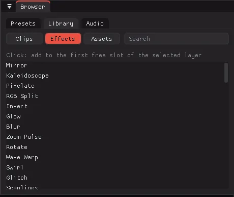

Contents
Getting started
- Welcome to NyrexVJ
- Installing and first start
- The window at a glance
- Your first show in five minutes
Playing visuals
- The clip grid
- Decks and transitions
- Layers and blending
- The Clip window
- Effects
- The Library
- Presets and sessions
- The Master window
Music and motion
Your own content
- Video and image clips
- Your own shaders
- 3D models
- The Clip Creator
- Text, particles and effect chains
- The node effect editor
- Live sources: Spout, NDI and cameras
Output and recording
Live control and shows
- Control: MIDI, OSC and the web page
- Show sync and timecode
- The show timeline
- Stage: DMX, VRSL and VRChat
- Plugins
Reference and help
Manual / Playing visuals
Effects
#Effect slots
Every layer has four effect slots and so does the master. Effects run from slot 1 to slot 4, so the order matters: a blur before a colour change looks different from a colour change before a blur. The effects of a layer change only that layer, the effects of the master change the final picture.
Each slot is a coloured band like in Resolume with a small triangle, the list to choose the effect (type in the list to search it), the button B and the button X. The triangle folds the slot up and down, B bypasses the effect (the button lights up and the sliders turn grey) and X empties the slot. Under the band are up to four sliders and a row for the music reaction. With high contrast switched on the old tick box takes the place of B and X. A slider that you moved goes back to its default with a right click. Effects that draw in three dimensions carry a [3D] mark in the list.
#Adding effects
- Open the Library, switch to Effects and click an effect: it goes into the first free slot of the selected layer. If all four slots are used, NyrexVJ says so.
- Drag an effect from the Library onto a slot to put it exactly there.
- Right click an effect in the Library to add it to a chosen layer or to the master.
- Choose an effect from the list in the slot itself.


#Reacting to the music
Under the sliders of a slot you find a band list, a mode and a target. Pick Bass, Mid, High, Level or Kick (or a macro, an LFO, Beat or Bar) as the band. Then choose how it acts:
- Parameter moves one value of the effect, the one you pick as target, by the amount you set.
- Gate shows the effect only while the band is loud and fades it out in silence. The value you set decides how sensitive the gate is.
Gate is a fast way to make a strobe or a glitch that only hits on the beat.
#Glass effects
Two effects make the picture look as if it is seen through glass. Prism Glass breaks the picture into prism facets: Facets sets how many, Refraction how far each facet bends the picture, Dispersion how strongly the colours split at the bend, and Shine how bright the edges are and how much they flash on the beat. Frosted Glass blurs the picture like frosted glass: Frost sets the blur, Grain adds fine grain, Milk lifts and veils the picture, and Beat Pulse makes the blur swell on every beat. Both have four sliders from 0 to 1 and are found in the Library under Effects.
#Feedback effects
A feedback effect remembers the picture it made a moment ago and mixes it into the next one. That is how trails, echoes and tunnels are made. Trails and Hue Feedback have always worked like this. Four more effects are new, all in the Library under Effects, all with four sliders from 0 to 1:
- Time Echo leaves a fading copy of everything that moved. Half-life is how long the copy takes to fade to half (from 0.04 to 3 seconds), Distance and Angle push the copy away from where it was, and Softness blurs it a little.
- Motion Smear blends the picture slowly toward the new one, so fast motion smears. Smear is the half-life (0.01 to 1.2 seconds), Slide and Angle move the old picture sideways, and Detail lets more of the sharp picture through.
- Feedback Transform makes a tunnel. Half-life runs from 0.05 to 4 seconds, Zoom grows the trails above the middle and shrinks them below it, Rotate turns them, and Drift slides them along a direction that turns slowly. A kick adds a small zoom.
- Accumulate collects light over time. Exposure is the window (0.1 to 10 seconds), Mode chooses the way (the lower third averages, the middle third keeps the brightest, the upper third exposes: it builds up like a long photograph and can reach white), Gain makes the picture brighter before it is collected, and Kick Flush lets a kick wipe what was collected.
The half-lives are real seconds. They are measured from the time between two frames, so a trail lasts as long at 30, 60 or 144 frames per second, and it holds still while the show is paused. The old effects Trails and Hue Feedback are not changed. Because feedback pictures hold 8 bit colour, a slow Trails can stop a few steps above black and leave a faint grey; the new effects round at random so that they fade all the way to black.
Freeze and Reset. When a layer or the master has a feedback effect, the effect rack shows Freeze feedback and Reset feedback. Freeze holds every feedback picture where it is while the live picture is still drawn over it. Reset clears them at once. Freeze is not saved with the show, so it is off after a restart. Both can be mapped to MIDI and OSC (the controls Freeze feedback and Reset feedback under Master, ids master/feedback-freeze and master/feedback-reset) and appear in the web interface. Freeze does not hold the buffers of shader clips and shader filters; Reset clears those too.
Memory. Each feedback effect keeps one picture of the size of its layer. Under Settings, Performance, Feedback you see how many buffers are in use and how much memory they take. Feedback budget (256 MB at the start, 0 turns it off, at least 64 MB) is the most they may use together. When it is used up, a new buffer is made smaller (three quarters, half, down to a quarter of the picture) and the effect still works; if even that does not fit, the effect shows the live picture without trails until memory is free, and the page says how many buffers were refused. Changing the budget clears the feedback pictures once. Reuse feedback buffers keeps a released buffer for a few seconds so that switching an effect off and on does not ask the graphics card for new memory.
#Your own effects
Besides the built-in effects there are effects that you make or install yourself: node effects from the node editor (shown as Node: name) and ISF filters from your shader folder (shown as ISF: name). They work in the slots like every other effect. See The node effect editor and Your own shaders. To keep a set of four effects together, save it as a chain, see Effect chains.
Found a mistake or something missing? Tell us on GitHub. The same manual is built into the program, so you have it without internet. Open it with F1 or from the Help menu, then User manual.